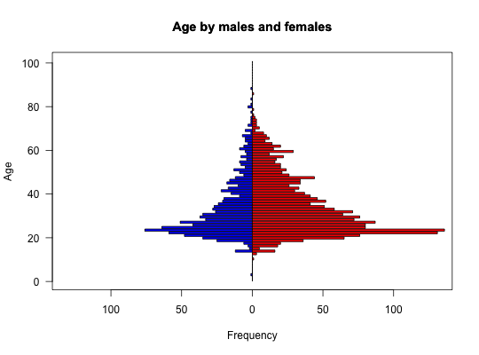
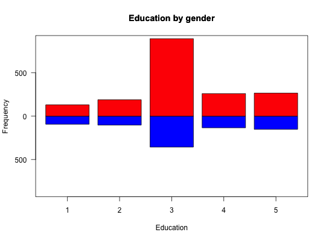

When showing e.g., age or education distributions for two groups, it is convenient to plot them back to back. bi.bars will do so.
bi.bars(x,grp,horiz,color,label=NULL,zero=FALSE,xlab,ylab,...)
| x | The data to be drawn |
|---|---|
| grp | a grouping variable. |
| horiz | horizontal (default) or vertical bars |
| color | colors for the two groups -- defaults to blue and red |
| label | If specified, labels for the dependent axis |
| zero | If TRUE, subtract the minimum value to make the numbers range from 0 to max -min. This is useful if showing heights |
| xlab | xaxis label if appropriate |
| ylab | y axis label otherwise |
| … | Further parameters to pass to the graphing program |
A trivial, if useful, function to draw back to back histograms/barplots. One for each group.
a graphic
data(bfi) with(bfi,{bi.bars(age,gender,ylab="Age",main="Age by males and females") bi.bars(education,gender,xlab="Education",main="Education by gender",horiz=FALSE)})